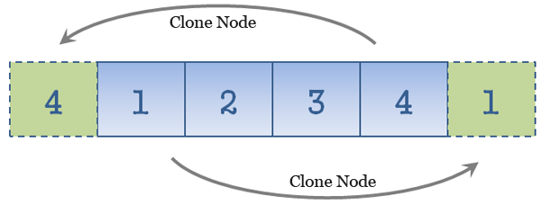

YUI Slide
这是一个集选项卡切换和幻灯切换功能于一体的小插件，基于YUI3实现，兼容移动终端（iphone/ipad/android），Slide插件配置简单、使用方便，具有良好的可定制性，目前已经运行于淘宝网的很多角落。
这个插件最初源自Cubee项目，这个项目是淘宝北京UED团队发起的，基于YUI3开发了许多好用的插件，Slide是比较有代表性的一个，如果你发现插件的bug，可以直接在github上提交，我们会尽快修复。
Slide插件兼容所有现代浏览器，包括ie6，它依赖的YUI的最低版本为3.3.0。
Demos
演示例子
HTML代码结构
- #J_tab，Slide的ID，名称自取，必须指定，用作hook
- ul.tab-nav,控制导航,必须指定,容器内容可以为空，默认指定自然数为下标，名称可定制
- ul.tab-nav li.selected,控制tab页签,若有li，则必须指定，名称可定制
- div.tab-content，内容容器，必须指定，名称可定制
- div.tab-content div.tab-pannel，内容面板，必须指定，名称可定制
样式定制
如果是图片轮播，div.tab-content需要指定宽高，超出部分隐藏掉，div.tab-pannel的宽高都为100%即可，这里需要指定div.tab-content的position:relative。
普通tab点击切换（无特效），内容部分高度不定，若带滚动切换效果，则需要制定div.tab-content尺寸
基本结构包含导航和内容两部分，“向前”、“向后”的按钮切换由开发者添加,只需保证基本原型html的完整即可
控制样式的class name可以配置，需要在js中启动的时候做相应配置，在不配置的情况下，Y.Slide以典型html结构做为默认配置进行渲染
种子的引入
slide.js要通过YUI模块的形式载入，组件不提供默认皮肤，皮肤需要自己提供，也建议以模块的形式载入
modules:{
'slide-skin':{//不提供默认皮肤，开发者自行绑定
fullpath:'skin.css',
type:'css'
},
'slide':{
fullpath:'slide.js',
requires:['slide-skin','node','anim']
}
}
初始化
通过构造函数的形式来渲染一个幻灯（Tab），第二个对象是配置参数，比如下面这两段代码，这段代码用来初始化一个简单的Tab
new Y.Slide('J_tab',{
eventype:'click' //通过点击页签来切换Tab
});
通过配置参数来定制渲染：
new Y.Slide('J_tab',{
eventype:'click',//tab上的触发事件
effect:'v-slide',//切换效果为纵向滚动
autoSlide:true,//自动播放
timeout:2000,//切换时间间隔
speed:0.5,//切换速度，越小越快，单位为秒
hoverStop:true//鼠标经过内容是否停止播放
});
跑马灯原理
跑马灯既是可以连续相同方向滚动的幻灯，有两种实现方式，一种是滚动时将首（尾）的节点拷贝至尾（首），另一种是初始化时处理首尾的节点，滚动时只改变位置，出于性能的考虑，这里选用第二种方式

配置参数
autoSlide (boolean)
是否自动播放，默认为非自动播放，默认值为false.
speed (float)
幻灯切换的动画速度，单位为秒，数值越小就越快，默认为0.5
timeout (number)
两次切换之间的时间间隔，单位为毫秒，默认为1000
effect (string)
切换的特效类型，取值有四种：'none'（无特效）/'fade'（渐隐特效）/'h-slide'（水平滚动）/'v-slide'（垂直滚动），默认为'none'
eventype (string)
触发tab切换的事件类型，默认为'click',取值：'click',点击，'mouseover',鼠标滑过
easing (string)
切换面板的特效风格，默认为'easeBoth',参考YUI doc
hoverStop (boolean)
鼠标悬停面板上是否停止播放，默认为true
selectedClass (string)
指定tab选中时的class name，默认为'selected'
conClass (string)
整个容器的class name，默认为't-slide'，目前未实现
navClass (string)
tab容器的class name，默认为'tab-nav'
contentClass (string)
tab内容容器的class name,默认为tab-content
pannelClass (string)
tab面板的class name，默认为tab-pannel
before_switch (function)
每次切换之前执行的动作，参数同switch事件的参数，返回true，继续执行，返回false，停止执行
ready (function)
初始化完成后的回调，参数同switch事件的参数，当前index为0
carousel (boolean)
是否以旋转木马形式播放，默认为false
reverse (boolean)
"播放下一个"和"播放上一个"对调，默认为false
实例对象的方法
goto
跳转到指定的tab，参数为index:0,1,2,3..，执行before_switch
switch_to
跳转到指定的tab，参数为index:0,1,2,3...，和goto的不同是，不执行执行before_switch
实例的事件
switch
切换时发生，不执行before_switch 回调参数为:{index:index,navnode:navnode,pannelnode:pannelnode}，当carousel为true时，index的值为真实的pannel的索引，这一点需要注意
var slide = new Y.Slide('J_tab');
slide.on('switch',function(o){
Y.log(o.index);//输出当前面板的真实索引
Y.log(o.navnode);//输出当前高亮的导航节点
Y.log(o.pannelnode);//输出显示的内容容器节点
});